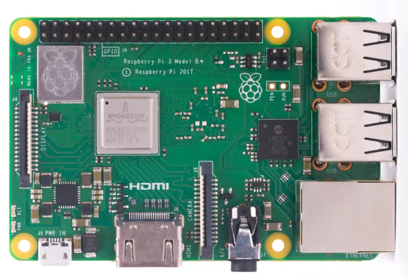

Raspberry Pi on väike ja soodne üheplaadiarvuti, mida kasutatakse programmeerimise õppimiseks, elektroonikaprojektide tegemiseks ja erinevate seadmete juhtimiseks. Selle abil saab ehitada näiteks väikese koduserveri, mängukonsooli või automaatikasüsteemi.
Rohkem informatsiooni leiab Raspberry Pi ametlikult veebilehelt

| Mudel | Mälu | Kasutus |
|---|---|---|
| Raspberry Pi 3 | 1 GB | Lihtsamad projektid |
| Raspberry pi 4 | 2-8 GB | Programmeerimine ja serverid |
| Raspberry Pi 5 | 2-16 GB | Nõudlikumad projektid |